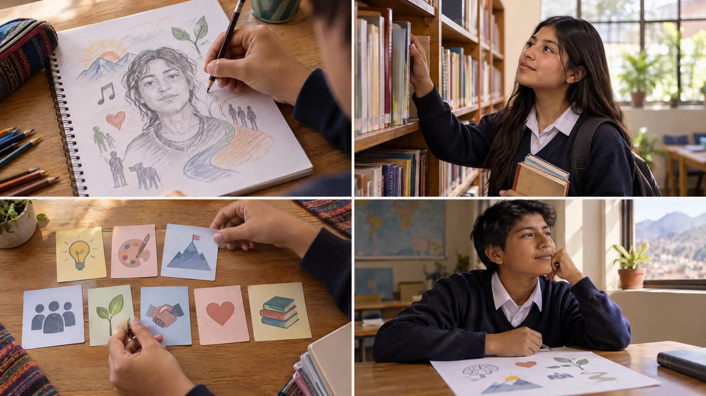
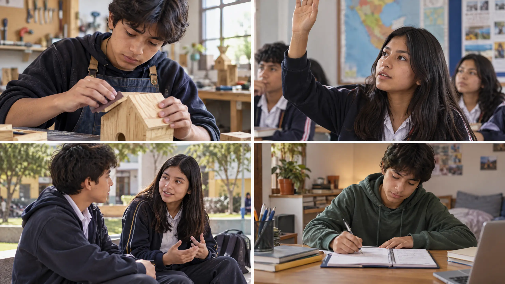
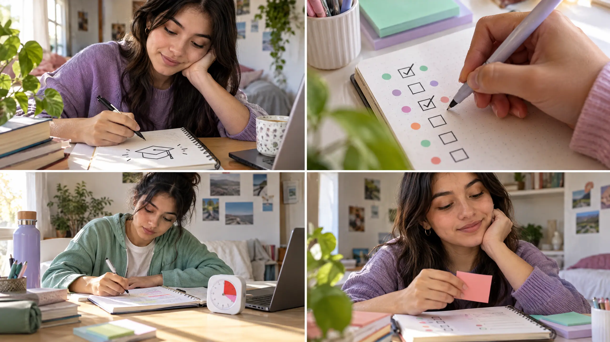

Reconoce
Intereses, fortalezas y necesidades.
MÓDULO 03 · PSICOLOGÍA Y BIENESTAR
Tus fortalezas no son una etiqueta. Son pistas para elegir, aprender y construir el siguiente paso.
TU MISIÓN
Al final crearás un autorretrato de fortalezas y el plan de una meta personal. Puedes usar un personaje ficticio si prefieres no compartir información propia.
ANTES DE EMPEZAR
Observa una idea, relaciónala con una situación y explica por qué elegirías un paso.
Intereses, fortalezas y necesidades.
Los cambios y recursos que te acompañan.
Una meta propia, posible y concreta.
El avance y el siguiente paso.
Antes practicaste reconocer emociones, escuchar y responder con empatía. Ahora aplicas esa atención hacia ti: ¿qué estoy sintiendo?, ¿qué necesito para avanzar?, ¿qué decisión es responsable?
✦UNA IDEA CLAVE
El autoconocimiento se construye al notar patrones, probar acciones y revisar lo que aprendes. No es un examen para descubrir una etiqueta fija.
Intereses, emociones, ideas y situaciones que llaman mi atención.
PREGUNTA · ¿Qué evidencia vi?Habilidades que uso y capacidades que puedo seguir practicando.
PREGUNTA · ¿Qué hice concretamente?Tiempo, información, práctica o apoyo para dar un paso.
PREGUNTA · ¿Qué recurso me serviría?No tienes que contar nada íntimo. Puedes responder con un personaje inventado, elegir una idea general o dejar una casilla en blanco.
TRES FICHAS · TRES MIRADAS
Los ejemplos y las imágenes explican ideas diferentes. Toca cualquier infografía para verla en grande.
Identifica fortalezas con acciones concretas y reconoce los recursos que ayudan a desarrollarlas.

Prueba estos tres comienzos. No son categorías cerradas: son pistas para pensar.
Un tema o actividad que despierta mi curiosidad.
Una acción que hago y puedo ilustrar con un ejemplo.
Una herramienta o persona que puede orientarme.
Una habilidad que quiero practicar con tiempo.
Una fortaleza describe una capacidad observada; no resume todo lo que eres.
Para recordarlo
Hola, Woendi. Conocerte no significa tener una respuesta definitiva sobre quién eres. Es observar lo que te interesa, lo que valoras, las habilidades que ya usas y lo que todavía quieres aprender. Puedes organizar tus ideas con tres comienzos: “Soy”, “Tengo” y “Puedo”. Por ejemplo: “Soy curiosa”; “tengo acceso a libros y personas que me orientan”; “puedo practicar una exposición”. Una fortaleza se nota en acciones concretas, como escuchar con atención o persistir cuando algo cuesta. También puedes reconocer una necesidad: más tiempo, una explicación o una pausa. No hace falta escribir algo privado. Si prefieres, practica con un personaje inventado. Lo importante es describirte con equilibrio: una habilidad no define toda tu identidad, y una dificultad tampoco. Al final, pregúntate: ¿qué evidencia tengo?, ¿qué quiero seguir desarrollando?
El desarrollo incluye más de una dimensión. Cada persona aprende y cambia a su propio ritmo.

Una mirada amplia evita reducir el crecimiento a la apariencia o a una sola habilidad.
El cuerpo crece y atraviesa cambios con ritmos distintos.
Se amplían maneras de pensar, aprender y resolver tareas.
Se aprende a reconocer emociones y relacionarse con otras personas.
Se practican decisiones y responsabilidades paso a paso.
El desarrollo es personal: compararse no revela qué apoyo necesita cada quien.
Para recordarlo
El desarrollo humano ocurre a lo largo de la vida, y durante la adolescencia pueden cambiar varias áreas. El cuerpo crece; también aprendemos a pensar con más posibilidades, a reconocer mejor nuestras emociones y a tomar algunas decisiones con mayor autonomía. Estos cambios no aparecen igual ni al mismo tiempo en todas las personas. Por eso, compararse para decidir quién va primero no ayuda a comprenderse. Imagina a dos estudiantes que están aprendiendo a exponer. Una se siente cómoda hablando y la otra necesita ensayar primero. No significa que una valga más; sus necesidades de práctica son distintas. El autoconocimiento permite observar qué recurso ya tenemos y cuál podemos fortalecer. Esto conecta con el módulo anterior: reconocer una emoción ayuda a elegir cómo actuar; ahora también observamos qué necesitamos para avanzar. Describe un cambio en un personaje ficticio y piensa qué apoyo le serviría.
Una meta personal traduce un deseo en una acción concreta que puedes revisar y ajustar.

Usa los cinco criterios para revisar la meta; si un punto falla, ajusta el plan.
¿Qué acción haré, exactamente?
¿Qué señal mostrará mi avance?
¿Puedo empezar con mis recursos?
¿Cabe en mi tiempo y condiciones?
¿Cuándo revisaré cómo me fue?
“Durante las próximas tres semanas, practicaré mi exposición diez minutos los lunes y jueves; marcaré cada práctica y pediré una sugerencia a mi docente al final”.
Acción + medida + frecuencia + plazo + recurso de apoyo.Si aparece un obstáculo, revisa el plan: ajustar un paso también es aprender.
Para recordarlo
Ahora prepara tu evidencia en dos partes. Primero, crea un autorretrato de fortalezas. Puedes dibujar o escribir una habilidad y añadir una prueba cotidiana: por ejemplo, “organizo mis materiales; ayer preparé mi cuaderno antes de clase”. Agrega un recurso que te ayude, como una lista, una compañera o una explicación. No necesitas compartir información privada; también puedes usar un personaje ficticio. Segundo, elige una meta que tenga sentido para ti. Hazla específica: qué acción harás. Decide cómo observarás el avance, comprueba que sea posible con tus recursos y ponle un plazo razonable. Divide el primer paso en una acción pequeña. Por ejemplo, practicar una presentación durante diez minutos y marcar cada práctica en un calendario. Si un plan no funciona, revisarlo no es fracasar: es usar información nueva para ajustar el camino. Termina escribiendo cuándo revisarás tu avance y qué apoyo podrías pedir.
ENTRENA EL CRITERIO
Primero identifica la pista. Después explica por qué la usarías. Todos los personajes son ficticios.
Sam quiere describirse. ¿Cuál ejemplo ofrece una evidencia concreta, en lugar de una etiqueta amplia?
En una escena inventada, Alex no pudo terminar una exposición a tiempo. Concluye: “No sirvo para hablar en público”. ¿Qué respuesta ayuda más a analizar la situación?
En una historia ficticia, Noa dice “quiero participar más”. Tiene poco tiempo de práctica esta semana. Diseña un paso inicial pequeño y una forma de saber si lo intentó. Luego compara tu idea con los criterios de la ficha 3.
“En la próxima clase, prepararé una pregunta y levantaré la mano una vez; anotaré después si lo intenté”. Es específica y medible. Si el paso no se siente alcanzable, Noa puede comenzar practicando la pregunta con una compañera. La meta le pertenece a Noa; no se fija para complacer a otras personas.
MIRA · PAUSA · CONECTA
Reproduce cada video aquí y anota una idea. El examen se habilita cuando hayas visto al menos el 70 % de ambos.
Smile and Learn — Español
Fíjate en las diferencias entre conocerte, cómo te ves y cómo valoras quién eres.
El reproductor está cargando. Si no aparece, abre el video en YouTube y vuelve para confirmar que lo viste completo.
Abrir video en YouTube ↗DESPUÉS: anota una diferencia entre autoconocimiento y autoimagen.
Khan Academy en Español — LearnStorm
Observa cómo un deseo se transforma en un objetivo revisable y qué indicadores aparecen en el ejemplo.
La lección fuente ofrece el recurso y su transcripción en español. Ábrela, mira el video y vuelve para confirmar que lo terminaste.
Abrir lección fuente ↗DESPUÉS: identifica una diferencia entre un deseo y una meta medible.
Progreso local de esta página; puedes volver a reproducirlos cuando quieras.
JUEGO · 5 SALAS
Resuelve retos cortos de autoconocimiento. Cada acierto suma una estrella. Puedes volver a jugar.
RUTA DE CINCO RETOS
Encuentra la descripción que usa una acción observable.
EVIDENCIA PRINCIPAL
Completa la hoja en papel o con un personaje ficticio. Imprime solo cuando te sientas lista.
Esta hoja no se envía ni se guarda en una cuenta. Las respuestas quedan temporalmente en esta página. Puedes no completarla aquí, usar ejemplos ficticios o imprimir una copia en blanco.
LISTA DE REVISIÓN
Úsala para revisar antes de entregar. No hace falta revelar información personal.
Incluye una capacidad y una acción que la ilustre.
Identifica algo que puede ayudar a continuar.
Señala acción, forma de medir y plazo razonable.
Conecta la meta con un motivo propio y un primer paso.
EVALUACIÓN FINAL · 20 PREGUNTAS
Incluye contenidos de las fichas, narraciones, videos y casos practicados. Lee cada alternativa antes de elegir.
Ver progreso actual arriba, en la sección de videos.
Revisa que cada pregunta tenga una alternativa elegida.
FUENTES Y CRÉDITOS
Las ideas se adaptaron a un módulo escolar. Los videos pertenecen a sus autores.
Este módulo es un recurso educativo. No es una evaluación clínica ni sustituye el acompañamiento de una persona adulta de confianza o de profesionales.